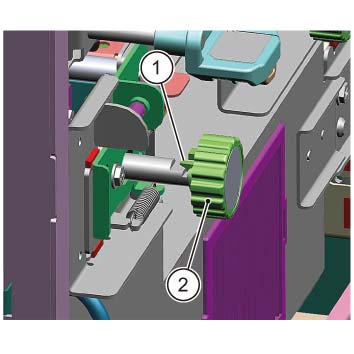
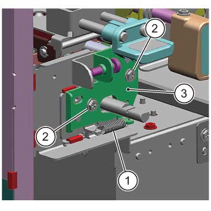
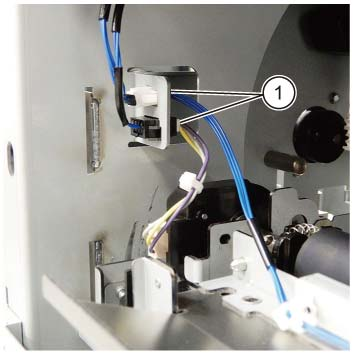
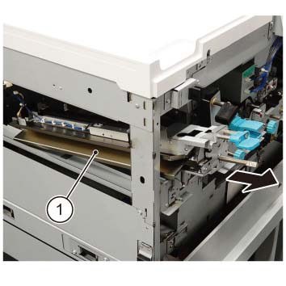
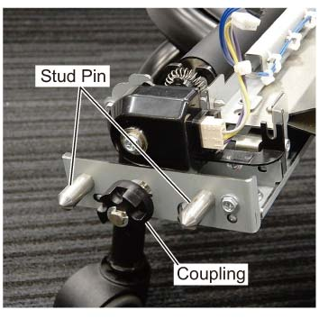

REP 76.5.1 ENT 滑槽 组件 
参考 PL:PL 76.5
安装

执行IOT的[关机]步骤. 确认电源开关已关闭并拔掉电源插头.

静电可能损坏电气部件. 静电可能损坏电气部件. 维修时请始终佩戴腕带. If a wrist 条带 不是 可用的, touch 一些 metallic parts 在...之前 servicing to discharge the static electricity.
打开前盖板.
拆卸内盖板. (PL 76.1)
拆卸 入口 灯 组件. (REP 76.3.2)
拆卸 旋钮 (2b). (图 1)
释放 Hook.
拆卸 旋钮 (2b).

(图 1) ism476029
拆卸支架. (图 2)
拆卸弹簧.
拆卸螺钉（x2）.
拆卸支架.

(图 2) ism476030
断开连接器（x2）. (图 3)
断开连接器（x2）.

(图 3) ism476031
拆卸 ENT 滑槽 组件. (图 4)
拆卸 ENT 滑槽 组件.

(图 4) ism476032
安装
To 安装, carry 出 the removal steps 按相反顺序.

安装时 the ENT 滑槽 组件, 插入 two Stud Pins 已指示 以下 进入 the hole of 框架, 和 安装 Coupling in alignment 使用 Coupling 的 SMG 传输 电机 1. (图 5)

(图 5) ism476065
当...时 the ENT 滑槽 组件 已更换, 执行 以下 procedures.
执行 纸张 转印 调整 的 DC809 和 执行 调整 纸张 对齐/套准 as necessary. (ADJ 76.8.1)